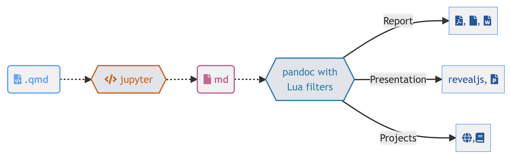

Quarto — це науково–технічна видавнича система з відкритим кодом, яка ґрунтується на універсальному конверторі документів Pandoc та використовує мову розмітки Markdown. Це універсальний інструмент для тих, хто пише на R, Python, Julia та Observable JavaScript.
За допомогою Quarto можна поєднувати описовий текст і код для створення відформатованих документів, веб–сторінок, постів у блогах, книг тощо.
4.1.1 Назва Quarto
Розробники Quarto хотіли використати ім’я, яке мало деяке значення в історії видавничої справи. Вибір пав на Quarto (від латинського quārtō, скорочено Qto, 4to або 4º) — це формат книги або брошури в одну четвертину топографічного листа. На кожній стороні листа при цьому поміщається 4 сторінки книги (8 сторінок на один лист).
Найраннішим відомим виданням такого формату була Книга Сивіл (англ. Sibyllenbuch), що була надрукована Йоганном Гутенбергом у 1452–1453 роках.
Рисунок 4.1: Quarto
4.1.2 Можливості Quarto
Quarto являє собою текстовий документ спеціального формату .qmd, який можна скомпілювати у різноманітні документи:
Рисунок 4.2: Меню створення Quarto–проекту у VS Code
RStudio: File -> New Project… -> New Directory
Рисунок 4.3: Меню створення Quarto–проекту у RStudio
4.2.3 Як працює Quarto
Спочатку Knitr (для R) або Jupyter (для Python або Julia) виконує всі фрагменти коду .qmd-файлу і створює новий markdown (.md) документ, який включає в себе код і всі його результати. Далі .md–файл оброблюється Pandoc для перетворення у різноманітні формати файлів (HTML, PDF, Word тощо).

Рисунок 4.4: Процедура рендерінгу документів в Quarto
4.2.4 Рендерінг
Для рендерінгу документу можна використати кнопку Render в VS Code.
Рисунок 4.5: Клавіша рендерінгу документу в VS Code
Рендерінг за допомогою командного рядку:
terminal
quarto render <input> --to <format># Наприклад:quarto render document.qmd --to docx
4.3 Структура документів Quatro
Quatro документи складаються з трьох базових складових:
YAML–шапка знаходиться нагорі документу і відділена трьома дефісами (---) зверху та знизу. В ній зберігається мета–інформація документу: назва, дата створення, автор, інформація щодо роботи коду, контенту і процесу рендерінгу.
Ця частина документу йде одразу після YAML–шапки і складає основну частину документу.
Markdown — це популярна і зручна мова розмітки. Ви непевно зустрічали її в README.md–файлах репозиторіїв GitHub, а також у Telegram–повідомленнях.
4.3.3 Чанки з кодом
Чанки — це блоки, які відділяються від тексту потрійними зворотніми лапками "```" ( анг. backtick) на початку та в кінці. У фігурних дужках вказується мова програмування на якій необхідно виконати код.
```{python}print('Fly, you fools!')```
Результат чанку за замовчування виводиться одразу після нього, але все це можна налаштувати.
4.4 Основи Markdown
Quarto ґрунтується на Pandoc та використовує різновид markdown в якості базового синтаксису. Pandoc markdown — це розширена та злегка перероблена версія синтаксису markdown.
Markdown — це формат звичайного тексту, який розроблено таким чином, щоб його було легко писати та, що ще важливіше, легко читати.
Quarto має вбудовану підтримку для створення діаграм Mermaid та Graphviz. Це дає змогу створювати блок–схеми, діаграми послідовності, діаграми станів тощо, використовуючи синтаксис простого тексту.
Приклад створення блок–схеми за допомогою Mermaid:
```{mermaid}flowchart LR A[Квадратна форма] --> B(Кругла форма) B --> C{Рішення} C --> D[Результат один] C --> E[Результат два]```
flowchart LR
A[Квадратна форма] --> B(Кругла форма)
B --> C{Рішення}
C --> D[Результат один]
C --> E[Результат два]
Виноски — чудовий спосіб привернути додаткову увагу до певних понять або чіткіше вказати, що певний вміст є додатковим або потребує додаткової уваги.
У Quarto є п’ять різноманітних виносок: - примітка (note) - застереження (warning) - важливо (important) - підказка (tip) - попередження (caution)
Колір і значок відрізнятимуться залежно від обраного типу. Ось як виглядають різні виноски в HTML:
Примітка
Зауважте, що існує п’ять типів виносок, зокрема: note, tip, warning, caution та important.
Застереження
Виноски — простий спосіб привернути увагу, наприклад, до цього застереження.
Важливо
Виноски точно покращать Ваш текст.
Підказка
Приклад виноски з текстом
Розгорніть, щоб дізнатися про згортання
Це приклад «згорнутої» виноски з попередженням. Використайте collapse="true" щоб згорнути її за замовчуванням та collapse="false" щоб виноска могла бути згорнута, але була розгорнути за замовчуванням.
4.4.9.2 Синтаксис markdown
Створіть виноски в розмітці за допомогою наступного синтаксису (зверніть увагу, що перший заголовок, використаний у виносці, використовується як заголовок виноски):
::: {.callout-note}## ПриміткаЗауважте, що існує п’ять типів виносок, зокрема:`note`, `tip`, `warning`, `caution` та `important`.:::::: {.callout-tip}## ПідказкаПриклад виноски з текстом:::::: {.callout-caution collapse="true"}## Розгорніть, щоб дізнатися про згортанняЦе приклад «згорнутої» виноски з попередженням.Використайте `collapse="true"` щоб згорнути її за замовчуванням та `collapse="false"` щоб виноска могла бути згорнута, але була розгорнути за замовчуванням.:::
4.4.10 Спеціальні символи
Синтаксис markdown
Результат
тире: -
тире: -
коротке (середнє) тире: --
коротке (середнє) тире: –
довге тире: ---
довге тире: —
Приклади
Життя прожити — не поле перейти (довге тире)
2020–2022 (коротке тире)
25 - 5 (тире)
YAML це рекурсивний акронім YAML Ain’t Markup Language («YAML — не мова розмітки»). У назві відображена історія розвитку: на ранніх етапах мова називалася Yet Another Markup Language («Ще одна мова розмітки») і навіть розглядалася як конкурент XML, але пізніше була перейменована з метою акцентувати увагу на даних, а не на розбивці документів.↩︎